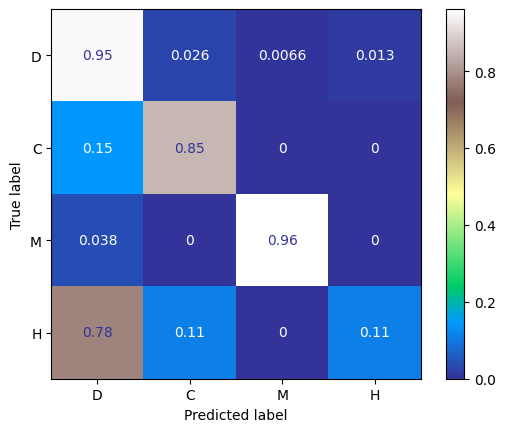
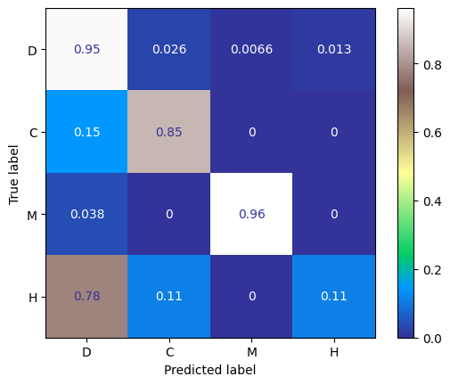

Introduction
The main question we're tackling in our project is to examine how effectively we can apply an ocular lesion/ocular disease dataset to a solution proposed in the LesionAid: Vision Transformers-based Skin Lesion Generation and Classification by Krishna et al. Our data consists of images of ocular diseases labeled with one of eight classes. Similar to the original paper, we aim to generate synthetic and augmented images to address class imbalance. We aim to investigate the effectiveness of the paper's proposed method of using synthetic images to solve the issue of class imbalance, as opposed to the more basic, and less costly, method of resampling, in which samples from minority classes are repeated to fill the gaps. We follow a similar process to a paper but with different approaches at each step. Specifically, we use a diffusion model for image generation instead of a ViTGAN, and for image classification, we use a pretrained ResNet on which we fine-tune our ocular disease data.
The project code is available here: rachaeltc/class_imbalance_4440
Paper Review
This paper discusses the importance of early detection of skin lesions in the dermatology field, and proposes the LesionAid, a system containing a deep learning architecture that can be used for early detection of skin lesions through image classification. It starts off discussing the anticipated challenges with implementing this system, and identifies that the main issue is the existence of class imbalance within their skin lesion dataset. This issue could potentially lead to overfitting and difficulty with creating a generalizable model. To handle this issue, the first component of their system is a Vision Transformer-based Generative Adversarial Network (ViTGAN), trained on the original images to generate synthetic images to aid in better balancing out the minority classes. The combined set of original and synthetic images are then transformed with the same augmentations, before being passed into the Vision Transformer (ViT) component of their system, to be used as training data. The next component in the system proposed is the Gradient-weighted Class Activation Mapping (GradCAM), implemented to better explain the performance of their ViTGAN, and also identify potential errors or biases. The last component of this system is a front-end web application, which can be used as a diagnostic tool.
For the sake of our project we focus mainly on the paper's choice to use synthetic images to mitigate their concern of class imbalance. The LesionAid system uses the synthetic output of ViTGANs and adopts this data as a part of their Lesion database, which is eventually used for lesion classification. They were able to achieve good results with this system, resulting with 99.2 percent and 97.4 percent training and validation accuracy as their highest rates. As such, we would like to investigate this technique of class imbalance and evaluate its effectiveness by implementing it with new techniques and applicability to ocular disease image data.
Method
Our implementation aims to evaluate the solution of class imbalance proposed in the original paper. First, we split the original ODIR-5K dataset into train and test set, using a 90% to 10% split, due to the limited amount of data. We then balance the training set through resampling, or repeating samples from classes with less samples. We then emulate the study and generate synthetic images, though we use diffusion models over GANs, as our second approach to class imbalance. The two balanced datasets are consequently used to fine-tune two separate ResNet models which are evaluated on the held out test set of images.

Image Synthesizing: Diffusion Model
In the first component, image synthesis, we aim to generate synthetic images for different labels of ocular lesions, with the intent of mitigating class imbalance. For this purpose, we train a UNet2DModel from scratch, through the Huggingface Diffusers API. The Unet2DModel is based on the UNet Model, which was developed with the motivation of being able to successfully train deep networks with fewer training samples. They achieve this through a U-shaped architecture, consisting of an encoder, the contracting path, and the decoder, the expanding path. One of the main benefits of this model is that it can output images that are the same size as the input, and was successfully tested on biomedical image segmentation. This model works to our advantage, since we have classes with as few as ~300 samples, and we are also working with biomedical images, specifically ocular scans.
The image data from our training set is first resized (to a resolution of 64x64) and normalized to constitute the training data for this model. We trained a separate UNet2D diffusion model for each of the eight classes of our data, and used these models to generate synthetic ocular images to be prepared as training data for image classification.
The image data from our training set is first resized (to a resolution of 64x64) and normalized to constitute the training data for this model. The training images from each label are used to train a separate diffusion model, so as to have models for each label that can produce synthetic images for that given class. Each UNet2DModel is trained on with 200 epochs and a learning rate of 1e-4. The encoder portion is composed of DownBlock2D and AttnDownBLock2D layers, which are both ResNet downsampling blocks. The decoder portion is composed of UpBLock2D and AttnUpBLock2D layers, both instances of ResNet upsampling blocks.
Image Classification: ResNet50
For the Image Classification we do a comparison between the performance of two ResNet models, one trained on a dataset balanced through synthetic images, and the other trained on a dataset balanced through repetition of the original images, both techniques used to even out the class sizes.
We used the pre-trained ResNet50 model for the image classification, and fine-tuned two instances of the model with our two datasets, using the Adam optimizer and cross-entropy as the loss function. The original architecture of the pretrained model was generally preserved, with just an addition of a Linear transformation layer, going from the model's number of features to our desired number of classes. Similar to the original paper, we trained the models over 30 epochs, each with a batch size of 50 samples.
After training two ResNet models, we evaluate performance by feeding the models the held out test data, in addition to the training. From there we were able to analyze classification reports and confusion matrices, created using those ground truth labels as well as the model predictions, to compare results and determine the effectiveness of the solution to class imbalance proposed in LesionAid.
Findings
Class Imbalance

In Figure 3, we can see that the original dataset contained a disproportionate amount of the O
class,
with over 1000 samples, compared to the M
, C
, and H
classes, which have less than
300 each. After employing the basic resampling technique and image synthesis technique with
the diffusion model, we can produce more balanced classes with artificial data.
Our starting and ending state for the sample distributions between classes draw a parallel to those in LesionAid, in which they balance the class samples by image synthesis through a ViTGAN.
Diffusion Model Results: Synthesized Images
We can see that in Figure 4, for label D
, the images being synthesized at epoch 10 already contain a lot
less noise than those of the other classes. This can be attributed to the large sample size
available for the label D
. In contrast, we can see for the label H
that the images
start to be less noisy much later into the training loop, compared to the other images, for the same
reason. H
contains the least samples, with 110 training samples.

We can also investigate the quality of the individual images generated by the diffusion model.
As seen in Figure 5, there is variability in the synthetic image quality between samples, as the
artificial SYNTH_22.jpg
eye scan contains more realistic and defined elements that reflect
those of the real sample, in comparison with the sample SYNTH_46.jpg
.
However, the overall results provide a generally accurate representation of the original images, which are all eye scan images containing a circular view of the scan at the center of the image.
Image Classification Training Loss and Accuracy
In the training progress plots for the image classification models using the two datasets, we can see that both observe relative increases in test set loss over the training time, while there is a decrease in the training set loss over time. This pattern is a lot more evident with the model trained on the resampled data, indicating that there is most likely overfitting that occurred, causing the model to not be able to generalize well. This makes sense because the resampling-balanced dataset consists of repeated samples, to the degree of magnifying a ~200 size dataset to ~1600.
We can also see that the training accuracies for both models end up around 1.0, which indicates severe overfitting.
In comparison with that of the training progress observed in the LesionAid study, we observe more fluctuations in both loss and accuracy, which may indicate a need for optimized hyperparameters, and further exploration of different batch sizes and learning rates.
Image Classification Evaluation
As observed in Figure 8, we can see that the two models perform similarly in terms of classification on the held out
data. We can see that for both models, they oftentimes mistaken an H
sample for D
. This can most likely
be explained by the overwhelming sample size of the Diabetes (D) eye scans, compared to the very few Hypertension (H)
samples available, causing a bias in the predictions towards the class with more samples.
 

Aside from label H
, we can see that the other labels are usually able to reliably be accurately classified,
with the resampling dataset-trained model exhibiting slightly better performance. Looking back at Figures 6 and 7, we can see that
both models generally demonstrate accuracies over 0.9, in both the training and testing sets. This result is comparable to
that presented in LesionAid, which prsented a 0.992 and 0.974 accuracy for training and validation, respectively.
Conclusion
In this project, we evluate the effectiveness of using syntehtic images as a solution for class imbalance, and compare the results to a more basic approach, resampling. We balance an ocular disease scan dataset with these two approaches: first with artificial images from a diffusion model, then through repeating samples, and then train two classification models on each dataset to compare performance. We observe that in cases with severely imbalacned data, using either technique may have limitations. For image synthesis, there would be insufficient data to learn from, and for resampling, there would be an overreliance on the few samples to make up gaps that are large in magnitude. These limitations are propogated to the performance of downstream applications, in this case, the image classification models, in the form of overfitting, leading to poor generalization.
We were limited in resources for this study, and as a result, had to compromise in different areas to make up for the lack of computational resources, including decreasing the number of epochs, reducing training set sizes, increasing batch sizes, among other factors. We were also unable to try different hyperparameters and training configurations. However, these limitations suggest potential for future work in this area. This may include developing a more suitable model or architecture for this use case and investing more resources to train a model to produce more accurate and higher quality synthetic images. We hope the design of this experiment can be used as a foundation to expand upon, and further insights into using synthetic images as a solution to class imbalance can be explored.
References
[1] Ghanta Sai Krishna and Kundrapu Supriya and Mallikharjuna Rao K and Meetiksha Sorgile. LesionAid: Vision Transformers-based Skin Lesion Generation and Classification. arXiv:2302.01104, February 2023.
[2] Olaf Ronneberger and Philipp Fischer and Thomas Brox. U-Net: Convolutional Networks for Biomedical Image Segmentation. arXiv:1505.04597, May 2015.
Team Members
Sarah Casale, Rachael Cheung